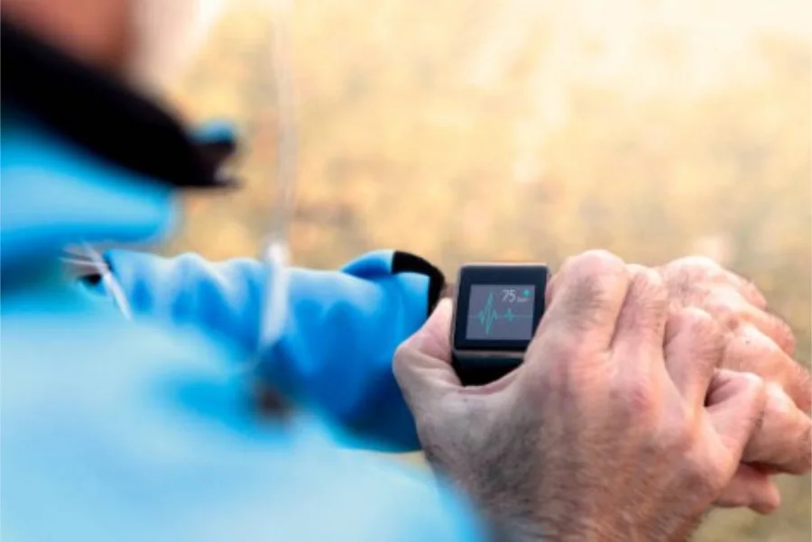

Évaluer sa forme physique et ses objectifs
Il est toujours possible de s’autoévaluer et d’entreprendre seul un programme d’entraînement, mais consulter un spécialiste permet d’établir un bilan de votre état de santé et de déterminer vos besoins selon le délai disponible avant le départ.
Pour une remise en forme, deux mois peuvent parfois suffire. Après une longue période d’inactivité, prévoyez plutôt jusqu’à six mois de travail régulier.
Sur le plan musculaire, visez au moins trois séances d’une heure par semaine. Pour le cardio, prévoyez entre 30 et 60 minutes aussi régulièrement que possible.
